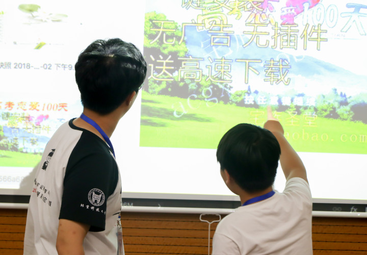

芯炬北京站的前期准备
这所谓，好的开始等于成功了一半。但好的开始当然少不了前期的充分准备。有别于其他的支教，我们的科技支教有别于传统的教育模式，传统的课堂教学往往以老师为中心，书本为中心的教学，基本上是老师的单向灌输，学生被动接受。可能不太利于学生的自主学习。因此，为了突破这一模式，我们的科技支教以学生为主体，让他们自己操作，自己总结与学习，老师提供提醒和帮助。也正因为这样，在正式支教之前，需要准备好基本的软件和材料准备。由于我们从四大方向——平面，视频，少儿编程，硬件进行开展课程。首先要确立所教的内容并准备好课上的PPT。做完之后对组内成员进行试讲，修改完善后正式加入之后的正式授课。经过改进形成了一个小的芯炬教育体系，编写教案。将课程的每个过程数字化，精准化。作为助教一员的我，在所有课程确立后，首先，个人自己要将这些内容基本掌握。对于Photoshop，Premiere基本平面视频软件已经有基础了。因此就熟悉一下基本操作。其次对于难度大一点的After Effect自主学习基本操作和使用。对于少儿编程Scratch，前期我在图书馆借了本Scratch游戏制作的书自学完了，并作出几个简单的小游戏做实验。对于硬件锡焊，对于自己大一索思社团开设的“超级悍将”活动学了锡焊，基本操作和注意事项还印在脑海。对于硬件Arduino,自己在这之前有买过一套Arduino硬件学习，并掌握了基本传感器使用和编程。对于课件相关的准备差不多如此。
在这个过程中，我感觉个人在这些方面也得到了很大提升，丰富了个人对计算机软件的使用领域。能够完成一些基本的UI平面设计和微电影的剪辑制作。其次，在硬件的学习感受颇深，自己动手操作一些真是可见的东西并能够做出一些小作品，自然会有成就感。相信我们的学生也会因此有因自己学习所获而倍感成就感。在学习过程也会越来越有信心。学习正是如此，因为信心的累计让学习更加深入。
当然，不仅如此，作为团队的摄影成员，在开始之前也要熟悉熟悉单反的操作以及一些参数的精调。主要是策划要拍出那些种类的照片 ，怎么去拍摄和利用线。以及相关设备的借用以及注意事项的关注。
当然，团队的网站设计小组也分配了一个位置给我。在构建网站的过程。主要以构建动态web前端和内容的充实为基础搭建“芯炬”站点。利用自学的HTML，CSS，JavaScript来搭建网页前端。以及基本的平面设计理念来美化布局。那么这就需要前期完善对相关语言的进一步学习加深，以及多阅览优秀的网页来积累创作经验，最终在自己搭建的过程中灵感来源。在开课之前，由于对JavaScript的掌握并不牢固，因此，准备阶段就通过网课深入学习JavaScript语法语句，相关事件使用等等。
最后，在课程正式开始之前，由于我们将课程对象面向北京基层的孩子。并且自己借教室来策划教导孩子。因此，在开课之前，我们还要自己制作精致传单，游走北京宣传，通过三四天的宣传工作进行招生。头顶烈日，面对路人的拒绝等等。感触颇深。可能主要人们对传单的第一印象都是商业性的，因此，在这方面对我们的影响也比较大，但还是坚持将宣传工作做到位。真正的去体会社会的动态和情况，积累社会上为人处世的经验，这对以后我们走出校园，自己探索人生大道有着积极的作用。通过这番锻炼，也让我们体会到用小小行动来为社会奉献自己的一小份力量的快乐。最终我们成功招到一批中小学生，通过与家长联系，登记基本信息后，就准备开始正式的支教活动的。
正式开营的第一天：开营仪式+少儿编程基础
8月2日芯炬夏令营开营的第一天，上午，我带着兴奋，激动的心情早早起床，准备迎接芯炬北京站的第一天。我们首先布置好了我们借的教室。挂上芯炬夏令营的旗子。将一些基础设备布置好，在黑板上写上课程表来展示近期安排，但由于一些缘故调动了顺序。
其次，布置好会场接下来就是开营仪式了。随着上午九点开营仪式的逼近，陆续有家长带着自己的孩子来参加开营，我拿着相机便开始拍摄起孩子们对即将到来的夏令营的各种紧张兴奋的姿态。
在全员到齐后，我们带着家长学生参观了机房。带他们初步认识课程内容。紧接着开营仪式就正式开始了，我们主要介绍了课程的目的想法以及具体实施过程。整个过程进展顺利，得到了家长们的放心。当然不仅如此，我们还带一些家离学校较远的孩子体验大学的食堂。上午的开营就这样过去了，迎接的是下午的第一节课Scratch编程基础。
对于下午的Scratch编程，首先要知道，Scratch是一款少儿编程工具。其特点是：编程者可以不认识英文单词，也可以不会使用键盘。构成程序的命令和参数通过积木形状的模块来实现。用鼠标拖动模块到程序编辑栏就可以了。不仅可以用于教会孩子们一些编程的概念，而且是包含物理和数学知识的模拟及讲述故事的一些练习。正因为这些特点，才选择Scratch作为基础编程进行教学。具体我主要是作为助教协助讲师帮助孩子们学习，并拍摄一些基本照片作为材料制作当天推送。在这个过程中自己也再次领会了Scratch编程的魅力。
开营第二天：Ps基础+少儿编程进阶
转眼接一天就过去了，8月3日这天我们的课程主要是PS平面设计和Scratch进阶。上午还是正常按时开课，所选课题PS，个人觉得这个适用于教学，特别是我们选择的以做表情包的方式来教学。显得亲切容易上手，更容易激起孩子们的兴趣，不至于感到枯燥。因此，正应兴趣是最好的老师这句经典名言。在PS平面设计的学习领域，我想这一技能在以后的日常生活往往都是用途广泛的，在一些需要作图的方面还是很管用的。主要是要掌握一些基本工具的使用，学会一些小技巧快捷键之类的能够让自己的设计更高效的完成。
其次，下午的Scratch进阶来言，就是对前一天的基础学习上进行扩展，自己来真正的去做一个小项目应用所学的知识来做出有意思的图片，同时积累成就感和喜悦感，在接下来的学习能够更有信心。对于我个人看法，这一天的学习就好比是一个初学计算机者必备的软件使用学习的必须过程。这对于孩子的成长学习其他知识都更有一种发自内心的欲望，形成想要去学的想法态度。
开营第三天：锡焊手工
紧接着的一天8月4日开设的课程也是最受孩子们欢迎的课程了，便是锡焊课。但是我们都知道，使用的电焊温度极高，很危险。但在正式焊接一些器件之前，进行基本的锡焊教学以及安全事项重点强调。不仅如此，为了确保安全，我们还要安排专门的助教在旁边监督。在这个课上，我也认为是最有意思的，因为这要动手实际操作的，并且能够焊出成果，想摇摇棒，幸运转盘以及电子时钟等，在焊接完成之后基本上都能成功展现成果，孩子们在看到自己焊了很久的成果，必然会欣喜，自信心也会暴增。
开营第四天：PR剪辑+PS进阶
随后到来的是8月5日的PR剪辑和PS进阶，上午的PR剪辑主要是将基础的拼接，界面的基本介绍。作为团队摄影成员，主要将他们的基本日常学习记录在一个个小方框中，深切体会到一种学习到新的有趣的知识的渴望。
下午的PS进阶，则主要制作一张海报为主。从基本的工具使用到小成果的制作，理论化为实践，才能更好的掌握。
开营第五天：AE特效制作

8月6日全天开始了比较难上手的AE使用。首先对AE的基本界面原理进行了教学后，个人对这款软件的理解主要是PS的视频化操作，也是利用图层进行设计。相对于PR剪辑难度要大很多。孩子们经过一番学习后，下午便开始了自己的项目制作。主要是制作一个小小的MV，融入音乐的动感画面。即学即用或许是加固学习的一大办法吧。
开营第六天：单片机Arduino
紧接着8月7日的单片机Arduino，再一次回到了自己动手操作实际的零件,这一次，首先上午对相关传感器和单片机板块进行了详细的介绍。对这些零件有了了解之后。下午开展了详细的电子琴的制作，由于孩子们对纯英文的代码还不是能够很好的接受，我们主要是让孩子们接线，对与内部的代码程序我们帮他们写入单片机。通过对相关器件的了解，他们自己根据图连接。主要锻炼动手能力，并对基本的电路原理有所了解。
开营第七天：街头采访+参观甲骨文实训基地
参观甲骨文
后期工作及材料整理

后期工作
芯炬大片——微电影
芯炬微电影